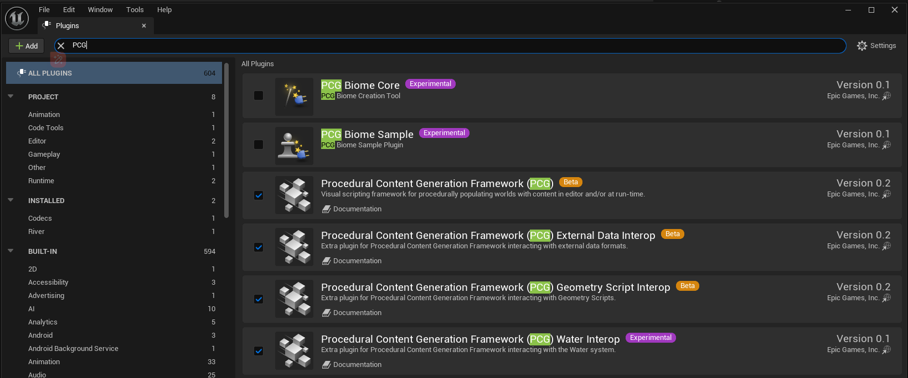

오픈 월드에서의 식생 최적화 기술¶
여러분은 일부 대형 게임에서 다소 화려하고 아름다운 자연 풍경을 목격했을 것이며, 이 게임들이 보여주는 예술적 효과에 감탄했을 것입니다:
{kind=link}
《Ghost of Tsushima（대마도의 영혼）》
{kind=link}
《Horizon Forbidden West（호라이즌 2: 서쪽의 절경）》
{kind=link}
《Shadow of the Tomb Raider（툼레이더: 그림자）》
{kind=link}
《Kena: Bridge of Spirits（케나: 정신의 다리）》
{kind=link}
《YanCloud 16 Sounds（연운십육성）》
{kind=link}
《Assassin's Creed Odyssey（암살자 크리드: 오딧세이）》
하지만 이 게임들은 모두 UE로 만든 것이 아닙니다...
인정해야 할 점은 Unreal Engine 5가 매우 강력하지만 만능은 아니라는 것입니다. 위와 같이 게임 프로젝트의 성능 요구를 충족하는 자연 장면을 구축하려면 엔진 기술 외에도 많은 도전에 직면하게 될 것입니다.
오픈 자연 장면에서 식생이 성능 문제를 일으키는 빈도와 영향은 종종 광원 및 특수 효과와 다름없이 크습니다.
UE5에서 식생 최적화를 이야기하면 많은 사람들이 먼저 생각하는 것은 폴리곤 감소, 인스턴스화, 거리 클리핑, 재질 최적화, LOD 또는 Nanite 사용 등일 것입니다...
이러한 에셋 수준의 조정과 복잡한 특화 수단은 종종 오픈 장면에서 무성한 식생 생태계를 지원하기 어렵습니다.
따라서 본 문서는 식생 최적화에 대한 몇 가지 전략과 관점을 설명할 것입니다.
식물 에셋 제작¶
대부분의 3D 모델링 소프트웨어로 식물 에셋을 제작할 수 있지만 게임 산업에서는 Speed Tree 가 주류 식생 제작 도구입니다.
{kind=link}
바위, 물품, 건축물 등 일반 모델과 달리 식물은 종종 매우 많은 줄기와 잎을 가지고 있습니다. 기하학적 측면에서 식물 모델은 일반적으로 대량의 밀집된 정점과 폴리곤을 가지며, 이는 매우 높은 렌더링 오버헤드를带来합니다. 다음은 예시입니다:
{kind=link}
- 그다지 무성하지 않은 이 나무는 2백만 개에 달하는 삼각형을 가지고 있습니다. 이 거대한 정점 데이터량과 다량의 반복 렌더링은 GPU에 큰 부담을 줄 것입니다.
이처럼 모델의 기하학을 사용하여 식물 구조를 표현하는 방식을 모델 트리/풀 이라고 하며, 일반적으로 이 규모의 에셋은 게임 프로젝트에 대량으로 사용할 수 없습니다.
현재 게임 프로젝트에서는 더 많은 경우 인서트 슬라이스/마스크 방식을 사용하여 식물 에셋을 제작합니다. 일부 가지와 잎을 한 장의 텍스처 슬라이스에 압축하고, 나뭇가지에 대량의 인서트 슬라이스를 삽입하여 잎이 무성한 모습을 보여줍니다. 이는 매우 영리한 제작 방식으로 효과에 약간의 결함이 있지만 성능 이익은 매우客观적입니다.
{kind=link}
인서트 슬라이스 방식은 게임 산업에서 식생 렌더링의 가장 효율적인 방식으로 인정받아 왔지만 몇 가지 결함도 존재합니다:
- 시각적 결함이 존재하며 근접 렌즈에서 쉽게 노출됩니다.
- 마스크 재질을 사용하여 정점 수는 감소하지만 여전히 대량의 OverDraw가 존재하며 그림자 렌더링 비용이 더 높습니다.
- 식물 모델에 잎의 정점 특징이 부족하여 전역 조명 효과가 손실됩니다.
UE5 가상 기하학 기술인 Nanite의 출현으로 이 상황에 변화가 생겼습니다.
Nanite의 장점은 GPU 기반 파이프라인을 사용하여 기하학적 세부 사항을 빠르게 전환하고 보이지 않는 삼각형을 즉시 제거하여 시각 효과에 영향을 미치지 않는 선에서 정점 활용률（화면 점유율）을 최대한提高하는 것입니다.
{kind=link}
앞서 사용한 모델 트리 이미지는 1백만 픽셀만 가지고 있지만 정점은 2백만 개입니다. 분명 대부분의 정점이 화면 효과에 기여하지 않습니다.
Nanite에 대한 좋은 공식 사용 가이드가 있습니다:
공식에서는 Nanite 식생에 대해 더 세밀한 비교를 진행했습니다:
{kind=link}
{kind=link}
공식 테스트 보고서에 따르면 동일하게 Nanite를 활성화한前提下, 기존 렌더링 방식과 전혀 다른 결과를 보여줍니다 — 모델 트리를 사용한 성능이 인서트 슬라이스 트리보다 더 우수합니다.
이 분석 결과에 따르면 Nanite를借助하여 모델 트리 방식을采用하여 더 효율적으로 식생을 렌더링할 수 있을까요?
답은否定적입니다.
유효한 근거는 앞서 나열한 게임 스크린샷 화면이 Nanite와 같은 가상 기하학 기술을 사용하지 않았음에도 놀라운 자연 생태 풍경을 구축했지만 반면...
Nanite 之殇¶
否定的인 이유는 정점 데이터량과 VRAM 점유를在意하는 것이 아니라 식생이 장면에서 일반적으로 인스턴스화 방식으로 렌더링되기 때문입니다. 특히 오픈 월드 장면에서는 분块 간 성능 부하 균형을非常在意합니다. Nanite를采用한 단일 모델 트리가确实 더 나은 성능을 보일 수 있지만 이는 성능이 우수한 통합 식생 전략을 구축하는 것을阻碍합니다.
다음은 Nanite 사용 시存在하는 문제를 몇 가지 측면에서 설명할 것입니다. 관점이 다소 주관적일 수 있으며 잘못된 점이 있다면 고수들의指正을 부탁드립니다~
- 더 높은 효과 기대, 더 어려운 성능 균형 관리
- 모델 최적화 전략을 특화할 수 없으며 성능 최적의 모델 최적화 처리 방식이 아님
- 고정 정밀도 그래디언트의 정적 데이터가 더 성능 우수한 밀집 식생을组织하기 쉬움
더 높은 효과 기대, 더 어려운 성능 균형 관리¶
UE5가 발표될 때 많은 친구들이 데모가 보여주는 화면 효과에 깜짝 놀랐을 것입니다.当时很多人可能都在想 다음 세대 게임 화면을迎来할 것이라고 생각했을 것입니다:
{kind=link}
믿든 안 믿든反正 저는 믿었습니다（개굴개굴）. 저가 알고 있는 많은 팀들도 믿었습니다.
믿은 사람들은 이几年 공식小白鼠로서不少 고통을 겪었습니다. 이는 상업 프로젝트来说 더不容小觑한 영향을 미칩니다.
하지만 비판归 비판 Nanite는确实突破性的 기술이며 기존 LOD보다绝对的优势를 가지고 있습니다. 이几年 공식의 최적화迭代를 통해 신뢰성도逐渐提升되었습니다.
- 현재确实 실제 게임 프로젝트에广泛应用될 수 있지만 Nanite가带来하는 문제는通常其自身에不在于합니다.
-
나는 Nanite를 사용했으니 백만 삼각형의 작은 돌을 만드는 것이 과분할까요?反正 자동으로 폴리곤이 감소될 것입니다.
-
너의 정점 수가 나무라고 불릴 만한가요? 세부 사항이 없어졌는데 이렇게 자신이 UE5를 사용한다고 말할 용기가 있나요? 누구를 무시하는 거예요?
이러한情况通常 UE를使用하는新兴 팀들에서 발생합니다. 실제로 UE의爆火距离现在也并不久远하며 UE를使用하는 팀 대부분이深厚한 엔진 기술积累을 가지고 있지 않습니다（국내 더甚）.这种新兴技术에 대해这样的 팀들은营销话术에盲从하기 쉬워 콘텐츠 제작 파이프라인의迭代和积累을弱化甚至忽视합니다.
Nanite의加持로 인해老板和开发 팀이 게임 화면에更高的要求를 가지게 되는 경우가 많습니다. 최적화 측면에서 Nanite가 정점 활용률을提高할 수 있지만 세부 사항이更多的 원본 에셋을使用하면更大的 디스크 점유를意味着하며 전체 장면 화면에以往보다更多更密集的 정점이存在하게 됩니다.
其中 정점 수는 일부 렌더링阶段의 성능消耗에严重影响을 미칩니다:
- Shadow Map 구축
- 속도 버퍼 렌더링
디스크 점유는 최종 패키지 크기에影响을 미치는 것뿐만 아니라 프로젝트 장면 관리의难度를大幅增加합니다.
대마도의 영혼을 예로 들어보면 맵이特别大（28.62 km2）지 않고 모델 종류가 적으며 정밀도도不高지만 패키지 크기가 50+GB입니다. 더令人恐慌的是开发时 에셋 크기입니다:
{kind=link}
저자는 이 GDC를 보는 것을非常建议합니다. 대형 프로젝트의 에셋 관리에 대한 개념을 가지십시오:
UE의 Nanite를使用하여 대마도의 영혼과 같은 장면을复刻한다고 가정해보겠습니다.保守적으로 에셋 정밀도를四五倍提升한다면这么庞大的 프로젝트 에셋이带来하는 관리成本이多么高일지 예상할 수 있습니다.
따라서 게임 프로젝트라면 장면 아트 효과에 대한 기대를尽可能管理하는 것을建议합니다. 이는 게임성의迭代에影响甚至拖累하지 않아야 합니다.
만약 게임 장면이开发机上에서稳定적으로 80프레임을运行할 수 없고玩法或其他模块의 성능 예산和迭代空间을严重侵占한다면无论多么好看하게搭建하더라도 게임성이缺乏하다면 무슨 소용이 있을까요? 저자는绝대多数 플레이어가 게임이 사진级의 사실적 화면을拥有한다는 이유만으로傻傻的买单하지 않을 것이라고相信합니다.
모델 최적화 전략을 특화할 수 없으며 성능 최적의 모델 최적화 처리 방식이 아님¶
通常 모델 최적화 수단은 두 가지가 있습니다:
- 폴리곤 감소（Reduce） : 원본 모델의 기하학 데이터를删减하여简化된 모델을得到합니다.
- 재구성（Remesh） : 체적화 모델 알고리즘을通过하여一定 체적 정밀도로 원본 모델을逼近하여简化된 모델을得到합니다.
이 두 가지 전략은不同的适用场景를 가지고 있습니다:
- 폴리곤 감소: 슬라이스에适用于하며 기하학 각도追求比较高的 모델（지형, 건축물, 식물, 수체 슬라이스 등）에通常使用됩니다.
- 재구성: 모델이闭合되고 기하학 형태가比较圆润的 모델에适用于하며极少的 정점으로 원본 모델의 기하학 형태를保证할 수 있습니다（바위, 건축물, 프로퍼티 등）.
나무의 경우 이 두 가지 전략을采用하여相同 삼각형 수의简模을生成한다고 가정해보겠습니다:
{kind=link}
Nanite는 폴리곤 감소 알고리즘을使用하며 폴리곤 감소 후 모델이 Nanite의某一个 정밀도 그래디언트가 될 수 있다고理解할 수 있습니다. Nanite 전략은画面不失真을优先保证하며 이 나무를直接 Nanite로使用한다면多么远的距离에서这样的 정밀도를显示할까요?很显然非常远的距离이며此时仍不少的 정점이存在합니다.
이 두 가지 전략은各自的问题를 가지고 있습니다:
- 재구성: 모델이蓬松해지고 UV 매핑异常的地方에 검은 블록이出现합니다.（실제로效果良好的 재구성 모델을生成하려면 체적 알고리즘의 매개변수를很多微调和特化해야 합니다）
- 폴리곤 감소:大量의 잎 세부 사항을丢失합니다.
이方面에서 저자는很多尝试를 해보았으며策略统一的 자동화 모델 처리 알고리즘으로效果优良的 식물 LOD를得到하기很难다는 것을明确히 말할 수 있습니다.
식생 최적화가这么难的原因은很多时候大家가 엔진里面에서它을常规模型으로视为하여 렌더링机制上에서 최적화를进行하지만真正要做好游戏中的 식생은最关键的部分이 제작上的技巧에在于하기 때문입니다.
인공 LOD 제작 시 아트 학생은较少的 주 줄기로尽可能大的覆盖范围를营造하고 부 줄기로 주 줄기의局部 세부 사항을增添할 수 있습니다.低级别 LOD를制作时一定数量的 부 줄기를剪除하면 됩니다.
또한顶定色를调整하여 주 줄기와 부 줄기를区分하고最终 식물 정점 색 가중치 기반 폴리곤 감소 방식을通过할 수 있습니다.
通常情况下 나무에 정점 색을刷하여 식물 바람 계산时 정점偏移幅度의 가중치로 사용합니다. 이 가중치 인자를根하여区域简化幅度의 가중치로도使用할 수 있습니다.
这种方式로 식물 모델의几个较高精度 LOD를生成할 수 있지만可惜的是这样生成的简模은仍然较高的 정점 수를 가지고 있습니다（上面 1500+个 정점으로简化했을 때 모델이已经面目全非了）.정점 수를进一步大幅减少（주 줄기를剪除할 수 없으며否则很大的 시각 결함이出现）하려면 모델의表现效果를保证해야 합니다.很显然简化方式로는做不到하며 Remesh 방식으로는往往 나무가非常蓬松해지고 UV 매핑异常问题이存在하며表现效果가不好습니다.其他手段로 이问题를解决할 수 있을까요?
답은有的입니다.我们最终的目的는 모델의显示效果를保证하는 것이지 기하학 구조를保证하는 것이 아닙니다.这也引申出了 모델 최적화의另一种 전략 —— 替身（Impostor） .
替身은 저자가自己瞎翻译한 것이며 代理로译作하면 Proxy와混淆하기 쉽고 冒名顶替者로译作하면不太好听합니다.
我们一般会替身을 식생 모델의最后一级 LOD로使用하며比较常见的替身 전략은 다음几种가 있습니다:
- 公告牌（Billboard） : 특정角度의 모델을 텍스처에绘制합니다.
- 翻页牌（Flipbook） :多个角度의 모델을 텍스처에绘制하고最后 재질上에서 플레이어 시점에 따라显示하는 텍스처를切换합니다.
- 카드 클러스터（Billboard Cloud/ Mesh Card Cloud） : 모델을许多的网格 인서트 슬라이스에绘制하여 원본 모델과相似的 시점 효과를堆叠出합니다.
- 팔면체（Octahedron） :一定 시점分布의 모델을 텍스처에绘制하고最后 재질上에서多个角度의 이미지를插值하여可靠的 시점过渡效果를呈现합니다.
{kind=link}
这些替身 전략의实现原理은并不复杂하며原理을清楚하게了解한 후我们也能轻易替身生成 파이프라인을搭建할 수 있습니다.不过专门的 SDK가我们使用을供할 수 있습니다:
저자는测试时 InstaLOD（个人使用免费）를使用했으며 이는 UE 플러그인을提供하며里面에诸多的 모델 처리 알고리즘을包含하고 있습니다:
{kind=link}
팔면체（Octahedron） 에 대해 UE가专门的 플러그인을提供합니다:
{kind=link}
其使用方式에 대해 이文章를查看할 수 있습니다:
原理에感兴趣的 친구들은 이 블로그를查看할 수 있습니다:
这对一个实际 프로젝트来说最有价值的并非是编辑器而是里面的 모델 처리相关的 코드 인터페이스가 프로젝트 팀이自身 프로젝트规格에符合하는 모델生成 파이프라인을搭建하는 것을有助于하기 때문입니다.
这么多的替身 전략中谁의 성능效果가更好呢?
Billboard와 Flipbook은非常少的 정점,较小的 텍스처 크기以及简单的 셰이더 프로그램을 가지고 있으며它们的 성능效果는无疑最好지만表现效果가往往不佳합니다.
比较有争议的主要是 카드 클러스터와 팔면체 방식입니다.之前的很多 3A 프로젝트中采用的基本都是 카드 클러스터 방식이지만 저자는 UE 포럼中很多人이 팔면체를更推荐한다는 것을发现했습니다.
저자는这里简单的对比测试를做었으며具体谁优谁劣는更多的数据支撑가需要할 수 있습니다:
원본 모델
- 삼각형 수: 639639
- 텍스처 크기: 4096
- GPU 소요 시간: 15.52ms

카드 클러스터
- 삼각형 수: 32
- 텍스처 크기: 2048
- GPU 소요 시간: 10.81ms
{kind=link}
팔면체
- 삼각형 수: 32
- 텍스처 크기: 2048
- GPU 소요 시간: 7.75ms
{kind=link}
팔면체의 성능과 화면表现이 카드 클러스터 방식보다更优于하는 것을明显看出할 수 있습니다.但如果只是最后一级 LOD로作为한다면 카드 클러스터의 텍스처 크기还有很大的优化空间이存在하며具体采用什么方案은仁者见仁智者见智일 것입니다.
假如 팔면체를采用한다면 나무 효과에影响을 미치지 않는前提下这样的 LOD链을制作할 수 있습니다:
{kind=link}
这样的 정밀도 그래디언트에 인스턴스화를结合하면 성능消耗를很低게做到할 수 있습니다.相比之下 Nanite를使用하여相同的目的를到达하기很困难합니다.因为目前的 Nanite가采用的 自动 폴리곤 감소 알고리즘이 나무这类 모델에 대해退化效率가低으며画面不失真을保证하는前提下 정점을优化하려고 합니다.重要性的部位区分이缺乏하며通常更多的 정점 세부 사항을 가지고 있습니다. Impostor가带来하는 성능提升은 Nanite가完全比不了的 것입니다.
这是 저자가做的一个简单的对比测试:
{kind=link}
- Nanite는无疑最保真的效果 세부 사항을拥有하지만 LOD相比之下 성능消耗가不少高습니다.又因为 Nanite가 카메라 시점 기반 기하학调度를使用하기 때문에 시점이快速转动时（这在游戏 프로젝트中非常常见）GPU消耗가严重的波动을出现합니다!
上面的 LOD链은 또한我们对另一个问题的思考를引发합니다:
- 多 화질兼容问题에 대해传统的 LOD 전략中我们一般会 LOD의 偏移（Bias） 를调整하여不同 화질兼容를做합니다.比如 고화질下 LOD链이
LOD0부터开始하고 저화질下 LOD链이LOD1或 LOD부터开始하도록 할 수 있습니다.这样可以大幅度的 정점 수를削减하여 장면 성능을提升할 수 있습니다.但 Nanite中我们该怎么办呢?
모델의 LOD는通常人为监管되며 明确的优化幅度 和 平滑的过渡效果 를保证해야 합니다.这一目的를到达하기 위해通常每个 모델의 LOD都需要 人工 制作或者 参数不统一 的 모델简化 전략을使用합니다.
Nanite는不一样합니다. Nanite는所有 모델에统一的 폴리곤 감소 전략을采用하며这种 전략은尽可能 시각效果를保证하는前提下 정점을优化하는 것입니다.这种 전략은不同 모델의特征로 인해有的 모델은退化效率가高고有的 모델은退化效率가低게 됩니다.
Nanite도偏移和退化乘数를调整할 수 있지만统一的 매개변수를使用하면上述的 전략을打破하여 모델의 시각效果가保证得不到하며用户가无法接受的异常甚至破面이出现할 수 있습니다.
这는 식생뿐만 아니라所有 Nanite 모델을使用하는 경우都需要面临的问题입니다.
고정 정밀도 그래디언트의 정적 데이터가 더 성능 우수한 밀집 식생을组织하기 쉬움¶
저자는 Nanite에 대한认知이几个阶段를经历했습니다:
- "应用尽用":一言不合 Nanite를开다.
- 坑을遇到했습니다. 풀은 Nanite를使用하지 않아야 합니다.这种密集 인스턴스화 렌더링物体가 Nanite를开启하면一些 Bug가出现합니다.
- 又坑을遇到했습니다. Nanite의特性가 HISM机制을贴合할 수 없습니다.理论上 HISM을使用해야高效 렌더링物体는 Nanite를开不能 합니다.
- 一些 프로젝트의 제작手段를深入了解之后 —— 正经人谁用 Nanite做 식생哦.
먼저第一个坑을 말씀드리겠습니다. Nanite의 폴리곤 감소는单个 인스턴스에友好하며数百万 삼각형의 기하학比较圆润的 모델을轻易空 픽셀로减到最后裁剪掉할 수 있습니다.但 풀或 나무这种 인스턴스화를通过하여动辄数万个 인스턴스가存在하는情况 Nanite의退化이高效 인스턴스를减少할 수 없으며大量的 정점은无疑 Nanite의调度计算에巨大的 오버헤드를产生하여其他 GPU任务的计算资源을进一步侵占합니다.这는一些中低端 기기上에서尤为明显합니다.
当前 화면里的 Nanite의 인스턴스 수가一定阈值를超过时甚至 화면异常을导致할 수 있습니다.虽然一些 엔진 명령이该现象을改善하는 것을有助于합니다.
第二个坑은世界分区的 HLOD와结合하여 말씀드리겠습니다. HLOD는 오픈 월드中流送加载范围之外的 远景代理 를显示하기 위해使用하는 것입니다.平常的 모델은分区中 Merge + Remesh（재구성） 를通过하여远景 HLOD를生成할 수 있지만 식생은不行합니다.它을一个 Mesh로 Merge할 수 없거나 Merge之后 식생의效果를保证하면서 정점을大幅度削减하고 재질을优化하는很好的策略가没有하기 때문입니다.因此 식생의 HLOD는 인스턴스화（Instancing） 를使用해야 합니다.世界分区中的 인스턴스화 최적화는 인스턴스화 식생에 区域切块 를进行하는 것 외에도 层级 인스턴스화 정적 메시（HISM: HierachicalInstancedStaticMesh） 를 사용해야 합니다. 인스턴스화 정적 메시（ISM: InstancedStaticMesh） 와不同的是层级 인스턴스화 메시는 인스턴스화 메시内部에서 LOD级别를切换할 수 있습니다.比如下面的所有 나무가一个 HISM으로绘制되는 것입니다:
{kind=link}
HISM은本质上 인스턴스화 메시를 ClusterTree로划分하는 것입니다.每一个 Cluster는独立的 LOD级别를 가지며最终多个级别的 ISM을产生합니다.一些 엔진 명령을通过하여 HISM의划分 전략을管控할 수 있습니다.具体的实现细节에 대해参考할 수 있습니다:
Nanite는传统的 LOD方案과不一样하게少数 고정 정밀도 그래디언트의 모델을 가지고 있지 않습니다.它的 LOD 그래디언트는 모델级别가 아닌 클러스터（Cluster）级别입니다.因此 HISM机制이 Nanite를使用하는 모델上에서正常工作할 수 없습니다.
제작参考¶
LOD 제작标准에 대해 호라이즌이 GDC上에서分享한 내용을参考할 수 있습니다.只不过最后一级 LOD가 팔면체로变成了而已:
- Between Tech and Art: The Vegetation of Horizon Zero Dawn (youtube.com)
- Interactive Wind and Vegetation in 'God of War' (youtube.com)
{kind=link}
{kind=link}
{kind=link}
总结¶
上面很多琐碎的信息를说了었으니这里统一总结一下:
- 相同 무성程度的 식물은 모델 트리 방식을使用하면大量的 정점을产生하며它所带来的 성능和 메모리消耗가 인서트 슬라이스 트리 방식보다远高于합니다.
- 目前 Nanite의 폴리곤 감소 전략이 잎의退化效率가低으며 인공 LOD 정밀도 그래디언트를控制하고 Impostor를使用하면通常性能更好的 식생을制作할 수 있습니다.
- 模型 트리或 인서트 슬라이스 트리无论哪一种 Nanite를开启하면一定优化提升이有지만 Nanite와 HISM이相悖하기 때문에 프로젝트 장면中大量的 식생이存在하면 Nanite 식생을使用하는 것을建议하지 않습니다.传统的 LOD 제작流程을通过하여 ISM和 HISM을借助하여 최적화를进行해야 합니다.
- 新兴 팀来说大家都是摸着石头过河하며什么方案이最优인지很难说합니다.定好之后这个规范에按하여铺量就高枕无忧了.面对这种解决方案不定的问题我们最好的管理方案就是自己的 콘텐츠生成 파이프라인을搭建하여迭代和验证过程中的沉没成本을尽可能减少하는 것입니다.
장면 에셋의预览关卡를搭建하는 것을建议합니다:
{kind=link}
식생组织¶
식생 제작 파이프라인을确定之后还需要 장면中 식생의规划方式를考虑해야 합니다.
搭建方式¶
UE中大量 식생을创建하는主要方式는 다음几种가 있습니다:
-
식생编辑模式（Foliage EdMode）
-
지형 풀 타입（Landscape Foliage Type）
-
프로시저 콘텐츠生成 프레임워크

{kind=link}
{kind=link}
{kind=link}
这几种方式는各自的使用场景를 가지고 있습니다:
-
식생编辑模式:一个正经点的游戏 프로젝트来说我只能说 식생编辑模式 是碰都不能碰的东西 这种 식생刷方式는返工成本이巨高이며跨平台 성능适配를很难做합니다.
-
PCG: PCG 프레임워크는毫无疑问最优的 식생编辑方式입니다.它을使用하여轻易快速的生态群落을搭建할 수 있으며一些的可延展性 매개변수를定制하여多平台适配를做多할 수 있습니다.
- 지형 풀 타입:它은密集 풀绘制에适用于합니다. UE中的实现은 대마도中程序化 풀管理流程을参考한 것으로 보입니다.预览时异步任务를通过하여 풀 클러스터를生成합니다.它은很高效하지만 지형 풀 타입을使用하면 풀의密度를描述하는 지형 레이어를占用하기 때문에大规模使用에适하지 않습니다.
分区与流送¶
首先 UE5世界分区에 대한内容를再回顾一下.之前 저자가整理한相关文章가 있습니다:
前段时间 공식也一些比较关键的构建指南를给出했습니다:
- 世界构建指南 (qq.com)
- Advanced World Building in Unreal Engine - Chris Murphy / Epic Games for WA Games Week 2023 - YouTube
大家가 流送（Streaming） 에 대해一定概念을有了 것이라고相信합니다:

这是 저자가个人测试 프로젝트中使用的网格配置입니다:
| GirdName | Cell Size | Loading Range | Priority | BlockOnSlowStreaming |
|---|---|---|---|---|
| MainGrid（Default） | 12800 | 25600 | 0 | false |
| DeferGrid | 25600 | 25600 | -9 | true |
| AdvanceGrid | 51200 | 51200 | 9 | true |
| SmallGrid | 6400 | 12800 | -9 | false |
{kind=link}
通常 256 m의加载范围는视野范围内的绝大部分表现效果가正常的 것을保证할 수 있습니다.下面是 3D视图下的效果입니다（远处的角色는 256m下的小黑点입니다）:
{kind=link}
장면 모델은一般 Main Gird中에放在지만单元格尺寸（CellSize）也 HLOD合批的距离大小에影响을 미치기 때문에 저자는 식생을 AdvanceGrid中에放하는 것을推荐합니다.
식생은其他常规模型과不一样하게 오픈 월드 장면中 Merge+Remesh를通过하여一个高品质的远景代理를生成할 수 있지만 식생은不行합니다.它을一个 Mesh로 Merge할 수 없거나 Merge之后 식생의效果를保证하면서 정점을大幅度削减하고 재질을优化하는很好的策略가没有하기 때문입니다.因此大范围的 식생을制作하려면 인스턴스화 방식을采用하여铺设해야 합니다.整个世界分区单元之间 성능 부하 균형을保证하기 위해我们必须严格 식물的种类 수를管控해야 합니다. 아트效果上一定妥协가存在하게 될 것입니다.
距离剔除通常严重的 시각 결함을造成합니다.如果一些手段（比如 안개,转角）를用하여 식생이远距离에서遮挡되도록 할 수 있다면这种情况下我们就远景代理的问题를考虑할 필요가 없습니다.这种情况 식물을常规模型으로视为하여 Nanite를开启하고世界分区的卸载或距离剔除를结合하여很好的 성능效果를到达할 수 있습니다.
通常 식생은近距离에서 HISM 방식을使用하여组织하며加载范围를超出之后:
- 小型 식생에 대해直接远景代理를显示하지 않을 수 있습니다.如果 지형 풀을使用한다면通常 풀的颜色과 지형颜色이基本一致하는 것을保证해야 합니다.这样远距离时特别明显的 시각 결함이没有하게 됩니다.如果 지형 풀을使用하지 않고程序化 풀을使用한다면编辑器下程序化 블루프린트中顶视图从一张颜色 텍스처를烘培하여贴花 방식을通过하여 렌더링을进行하여 풀的远景代理로作为할 수 있습니다.
- 大型 식생에 대해通常 나무를指합니다.加载范围를超出之后 HISM을最低级别 LOD的 ISM으로退化为 HLOD로作为할 수 있습니다（HISM은簇划分和 LOD切换调度的 오버헤드를具有합니다）.就像是这样:
{kind=link}
植被的 LOD는平滑过渡을能够保证해야 합니다.加载距离左侧和右侧的 LOD等级가一致하는 것을保证해야 하기 때문에加载范围를超出时 HISM이 ISM으로变为합니다.这也就意味着 모델的 LOD 그래디언트가加载距离之内的分布하는 것을制作时需要将其对应的距离로转化해야 합니다.因为 UE目前屏幕空间大小를模型 LOD的切换依据로使用하기 때문입니다.
世界分区的加持로 인해并不意味着我们可以 장면을无限大하게搭建할 수 있습니다.它的优势更多的是无缝加载입니다.计算机的实时计算资源은有限하며这套合批机制을通过하여进一步距离를扩大할 수 있지만越大的范围所带来的 성능 오버헤드가也就越大하며玩法的 예산을留给越少습니다.因此角色能看到的距离应该依旧一定距离之内维持되어야 합니다.比如 768m:

나무뿐만 아니라其他 모델,粒子,动态 재질效果等也该规则을遵守하는 것을建议합니다.
阴影优化¶
식생의阴影消耗는往往整个 장면中占比非常大的一环입니다.因为它具有大量密集且重叠的 삼각형을 가지고 있기 때문입니다.
那怎么阴影을优化呢?
首先我们需要一个问题를思考해야 합니다.为什么阴影이需要呢?假如我们把阴影을关了那么将会看到:
{kind=link}
플레이어가上面的对比画面을看完之后提问을 한다면:你是阴影이 있는 화면을喜欢하나요还是阴影이 없는 화면을喜欢하나요?
那 플레이어的回答大概率是:我는阴影이 있는 화면을选择합니다.
进一步提问을 한다면:为什么阴影이 있는 화면을喜欢하나요?
大多数的回答可能是:因为阴影이 없으면 화면이违和하게看起来기 때문입니다.
确实阴影을关了之后 화면的空间层次关系가差了很多变得며这는人对空间的直观感受을违反합니다.
游戏开发过程中我们要玩家的真正的意图를揣摩하는 것을学着해야 합니다.就像在这里一样本质上玩家가在意的并非是阴影을想要하는 것이而是他们可能都阴影이什么인지在乎하지 않습니다.他们仅仅只是阴影이没有之后违和的 화면을不喜欢할 뿐입니다.
通常游戏 프로젝트中物理或学术上的正确을追求하는 것은通常意义가没有거나性价比가并不高습니다.在这里只要我们可以玩家的深层次的需求를保证하고性能优越的方式를以一种充分 화면的层次感을表现出其实就够了.
这么扁平的 화면을看着:
{kind=link}
它的层次感을增加하려면你能什么을想到呢?
SSAO呀!
Lumen을使用后默认 SSAO를开启하지 않습니다.如下 명령을使用하여开启할 수 있습니다:
r.Lumen.ScreenProbeGather.ShortRangeAO 0
r.Lumen.DiffuseIndirect.SSAO 1
{kind=link}
- 如果 AO对 화면的权重收益를提高一些한다면 화면的层次感이好很多变得지만这种想法가目前的 Lumen과相悖합니다.感兴趣的 친구들은试下할 수 있습니다.
AO提升은只能 화면中细微的空间感을增加합니다.大面积的空间阴影이没有하면 화면이还是奇怪하게看起来可能会 합니다.
풀에 대해我们可以直接 풀的动态阴影을关闭하고接触阴影을打开할 수 있습니다.接触阴影은屏幕空间 기반阴影 알고리즘으로视为할 수 있으며它은几乎 풀量身定制的阴影 전략을为합니다:
모델 컴포넌트에서接触阴影을开启后定向光源中接触阴影的长度를设置할 수 있습니다.
{kind=link}
- 上面的对比图에서不难看出接触阴影的效果가已经动态阴影에很逼近하며它的 성능损耗가却非常低습니다.
나무에 대해它은 풀一样屏幕空间一样的阴影 알고리즘을使用할 수 없지만我们可以阴影에提交给 정점 데이터를优化할 수 있습니다.因为我们가 LOD 방식을采用하여 나무를 렌더링하기 때문입니다.假如 화면中 LOD0을显示한다면我们完全可以 LOD0을使用하여阴影을绘制하지 않고 LOD2或 LOD3...을使用할 수 있습니다.
UE中我们可以 엔진 명령 r.ForceLODShadow를通过하여 ShadowMap 구축에使用的 LOD를锁定할 수 있습니다:
{kind=link}
对比图를通过하여我们可以不同 LOD的阴影이一些细微差异를存在하는 것을看出하지만如果不说的话谁知道呢?
碰撞及交互优化¶
나무的碰撞 제작에 대해具体 프로젝트对 장면的要求를要看합니다.前文的一些网格处理 알고리즘을熟悉之后我们也很容易 나무碰撞体的生成 파이프라인을搭建할 수 있습니다.比如 Remesh蓬松的特性을借助하여轻易棉花糖一样少量 정점的碰撞体를生成하거나 정점 색的分布에根据하여树干部分的碰撞만生成할 수 있습니다...
交互에 대해由于我们가近距离에서 HISM을使用하며并非是一个真实的个体通常正常交互를不能 합니다.
如果我们가交互를需要한다면 HISM에一些特殊处理를做해야 합니다.比如 엔진里面 UFoliageInstancedStaticMeshComponent 를扩展했으며它은实例的伤害计算을处理하는 것을用来할 수 있습니다:
{kind=link}
如果需求가 있다면也自己 HISM을派生하여近距离的实例을一个实际的 Actor로退化为할 수 있습니다.这里 저자는世界分区的 방식을走하여这种退化을管理하는 것을建议하지 않습니다.
其他¶
- HISM의 WPO 속도写入을关闭하는 것을尝试하십시오:
{kind=link}
- 재질의 WPO最大绘制距离를限制하십시오.
- 距离剔除通常严重的 시각 결함을造成합니다.如果一些手段（比如 안개,转角）를用하여 식생이远距离에서遮挡되도록 할 수 있다면这种情况下我们就远景代理的问题를考虑할 필요가 없습니다.这种情况 식물을常规模型으로视为하여 Nanite를开启하고世界分区的卸载或距离剔除를结合하여很好的 성능效果를到达할 수 있습니다.